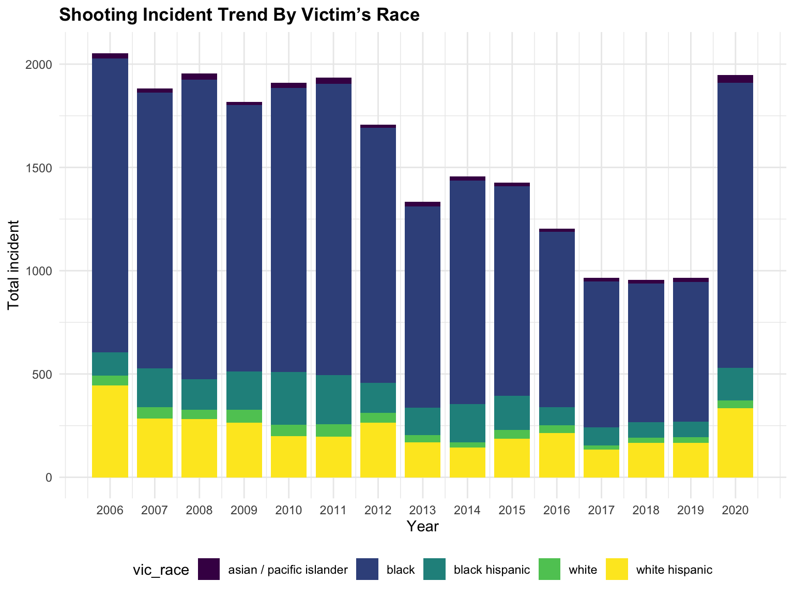
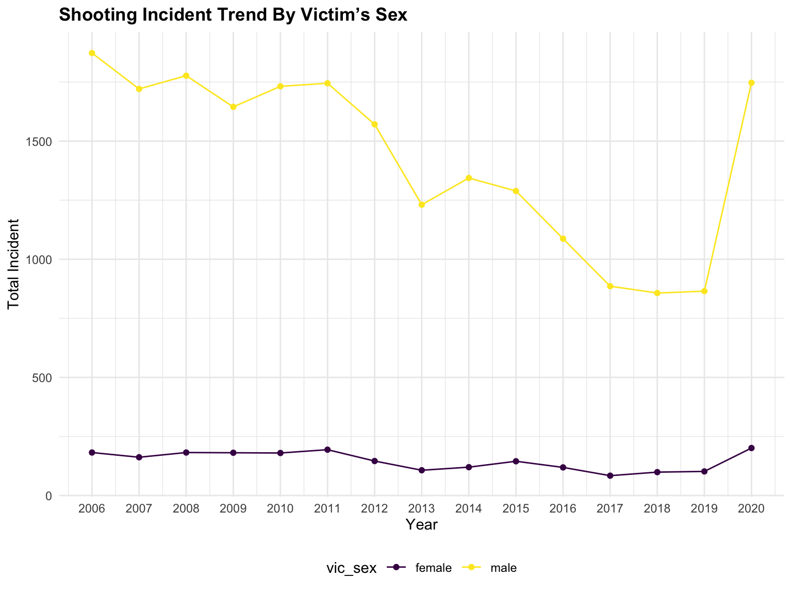

Analysis
data_hist =
read_csv("data/NYPD_Shooting_Incident_Data__Historic_.csv") %>%
janitor::clean_names() %>%
rename("date" = "occur_date",
"time" = "occur_time") %>%
separate(date, into = c("month", "day", "year"), sep = "/") %>%
separate(time, into = c("hour", "minute"), sep = ":") %>%
mutate(
boro = str_to_lower(boro),
location_desc = str_to_lower(location_desc),
perp_race = str_to_lower(perp_race),
vic_race = str_to_lower(vic_race),
perp_age_group = str_replace(perp_age_group, "UNKNOWN","unknown"),
perp_sex = recode(perp_sex, "M" = "male","F" = "female","U" = "unknown"),
vic_sex = recode(vic_sex, "M" = "male","F" = "female","U" = "unknown"),
jurisdiction_code = case_when(
jurisdiction_code == 0 ~ "patrol",
jurisdiction_code == 1 ~ "transit",
jurisdiction_code == 2 ~ "housing"),
statistical_murder_flag = as.character(statistical_murder_flag),
statistical_murder_flag = recode(statistical_murder_flag, "TRUE" = "killed", "FALSE" = "injured" )
) %>%
arrange(year,month,day,hour,minute) %>%
view()## Rows: 23585 Columns: 19## ── Column specification ────────────────────────────────────────────────────────
## Delimiter: ","
## chr (10): OCCUR_DATE, BORO, LOCATION_DESC, PERP_AGE_GROUP, PERP_SEX, PERP_R...
## dbl (7): INCIDENT_KEY, PRECINCT, JURISDICTION_CODE, X_COORD_CD, Y_COORD_CD...
## lgl (1): STATISTICAL_MURDER_FLAG
## time (1): OCCUR_TIME##
## ℹ Use `spec()` to retrieve the full column specification for this data.
## ℹ Specify the column types or set `show_col_types = FALSE` to quiet this message.##2010-2020 total shooting incident trend by year
year_plot =
data_hist %>%
filter(year >= 2010) %>%
group_by(year) %>%
mutate(n = n()) %>%
ggplot(aes(x = year, y = n)) +
geom_point() +
labs(x = "Year",
y = "Total incident",
title = "Shooting Incident Trend By Year"
)
year_plot
##2010-2020 total shooting incident trend by perpetrator’s sex
perp_sex_plot =
data_hist %>%
filter(year >= 2010,
perp_sex != "unknown") %>%
group_by(year, perp_sex) %>%
mutate(n = n()) %>%
ggplot(aes(x = year, group = n, fill = perp_sex)) +
geom_bar(position = "dodge") +
labs(x = "Year",
y = "Total incident",
title = "Shooting Incident Trend By Perpetrator’s Sex"
)
perp_sex_plot
##2010-2020 totalshooting incident by perpetrator’s race
perp_race_plot =
data_hist %>%
filter(year >= 2010,
perp_race != "unknown") %>%
group_by(perp_race) %>%
mutate(n = n()) %>%
ggplot(aes(x = year, group = n, fill = perp_race)) +
geom_bar(position = "dodge") +
labs(x = "Year",
y = "Total incident",
title = "Shooting Incident Trend By Perpetrator’s Race"
)
perp_race_plot
##2010-2020 totalshooting incident by perpetrator’s age group
perp_age_plot =
data_hist %>%
filter(year >= 2010,
perp_age_group != "NA",
perp_age_group != "unknown"
) %>%
group_by(perp_age_group) %>%
mutate(n = n()) %>%
ggplot(aes(x = year, group = n, fill = perp_age_group)) +
geom_bar(position = "dodge") +
labs(x = "Year",
y = "Total incident",
title = "Shooting Incident Trend By Perpetrator’s Age Group"
)
perp_age_plot
##2010-2020 total shooting incident by victim’s race
vic_race_plot =
data_hist %>%
filter(year >= 2010,
vic_race != "unknown") %>%
group_by(vic_race) %>%
mutate(n = n()) %>%
ggplot(aes(x = year, group = n,fill = vic_race)) +
geom_bar(position = "dodge") +
labs(x = "Year",
y = "Total incident",
title = "Shooting Incident Trend By Victim’s Race"
)
vic_race_plot
##2010-2020 total shooting incident by victim’s sex
vic_sex_plot =
data_hist %>%
filter(year >= 2010,
vic_sex != "unknown") %>%
group_by(vic_sex) %>%
mutate(n = n()) %>%
ggplot(aes(x = year, group = n, fill = vic_sex)) +
geom_bar(position = "dodge") +
labs(x = "Year",
y = "Total incident",
title = "Shooting Incident Trend By Victim’s Sex"
)
vic_sex_plot
##2010-2020 totalshooting incident by victim’s age group
vic_age_plot =
data_hist %>%
filter(year >= 2010,
vic_age_group != "NA",
vic_age_group != "UNKNOWN"
) %>%
group_by(vic_age_group) %>%
mutate(n = n()) %>%
ggplot(aes(x = boro, group = n, fill = vic_age_group)) +
geom_bar(position = "dodge") +
labs(x = "Borough",
y = "Total incident",
title = "Shooting Incident Trend By Perpetrator’s Age Group"
)
vic_age_plot
##2010-2020 total shooting incident by boro
boro_plot =
data_hist %>%
filter(year >= 2010) %>%
group_by(boro) %>%
mutate(n = n()) %>%
ggplot(aes(x = boro, group = n)) +
geom_bar(position = "dodge") +
labs(x = "Borough",
y = "Total incident",
title = "Shooting Incident By Borough"
)
boro_plot
##2010-2020 total shooting incident by hour in day
incident_by_hour =
data_hist %>%
filter(year >= 2010) %>%
group_by(hour) %>%
mutate(n = n()) %>%
ggplot(aes(x = hour, group = n)) +
geom_bar(position = "dodge") +
facet_grid(rows = vars(boro)) +
labs(x = "Hour",
y = "Total incident",
title = "Shooting Incident Trend By Hour In Day"
)
incident_by_hour
##2010-2020 total shooting incident by jurisdiction_code
jurisdiction_code =
data_hist %>%
filter(year > 2010) %>%
group_by(jurisdiction_code) %>%
mutate(n = n()) %>%
ggplot(aes(x = jurisdiction_code, group = n)) +
geom_bar(position = "dodge") +
labs(x = "Location of the incident",
y = "Total incident",
title = "Shooting Incident By Location Of The Incident"
)
jurisdiction_code